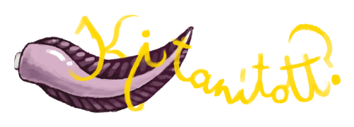
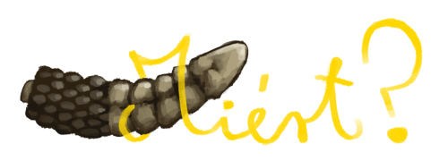
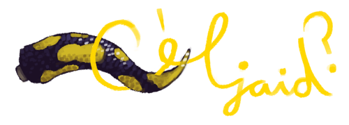
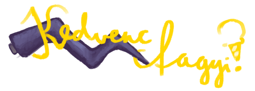

Nevem Méregvér Máté, a Makrancos, a Rémszögletű Rettegerdő tizenharmadik Sötét Ura, a Kanálhajlító Világbajnokság tizenharmadik aranyérmese, a... De inkább rövidre fogom. Én a sötét mágia mentora vagyok.
Csak add meg az adataidat az oldalon, és a lelked az eny... mármint, a jövő a tiéd!

Hallottad már Árnyas Áron, az Ármányos tragédiáját? Gondoltam, hogy nem. Ez nem egy olyan történet, amit az erdőn kívüliek mesélnének neked. Ez egy erdei legenda. Árnyas Áron egy Sötét Úr volt, egy olyan hatalmas és bölcs, hogy a sötét mágia használatával formálni tudta a árnyakat és életet teremteni belőlük. Olyan nagy tudása volt a sötét mágiáról, hogy szeretteit távol tudta tartani a haláltól. A Sötét Mágia olyan képességeknek ad utat, amiket nem sokan neveznének... természetesnek. Egyszer olyan erős lett... Hogy az egyetlen dolog, ami elrettentette, az saját erejének elvesztése volt, ami persze végül be is következett. Sajnálatos módon, minden tudását átadta tanítványának, aki aztán álmában megölte. Igazán irónikus. Másokat meg tudott kímélni a haláltól, magát viszont nem.

Nagyon hálás vagyok mindenért, amit Áron Mester megtanított nekem: őst ölni, seprűnyélen ülve hegyek csúcsait levágni, egy atombombányi tűzgolyót a kezemben tartani." Azt akarom, hogy a következő generáció is megtapasztalhassa mindezt. Ja, és a pénz.

Egy olyan szörnyű gonosz megteremtése, akinek a nevének kiejtése is átrázza a halandók lelkét; olyasvalaki, aki egy többrészes regénysorozat fő antagonistája lehetne.
Mert ki mást választanál? Berci Mestert a szomszédos erdőben a kis játszóterével? Én vagyok a leghatékonyabb sötét mentor az országban! Csak nézz rá a sikertörténetek oldalra, ha bizonyítékot akarsz!
Heh? Ez valami idegen szó? Miért kérdeztétek ezt ennyien?

Nyílméregbékás éjcsokoládé bizmutreszelékkel. De a sima csoki is megteszi.